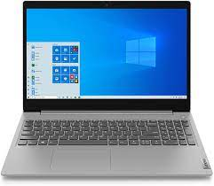

Le WLAN (réseau local sans fil) domestique est un bon exemple de petit réseau client/serveur.
Les différents appareils présents à la maison sont reliés par liaison radio au routeur, qui agitcomme nœud central (serveur) au sein de la maison.

ordinateur portable